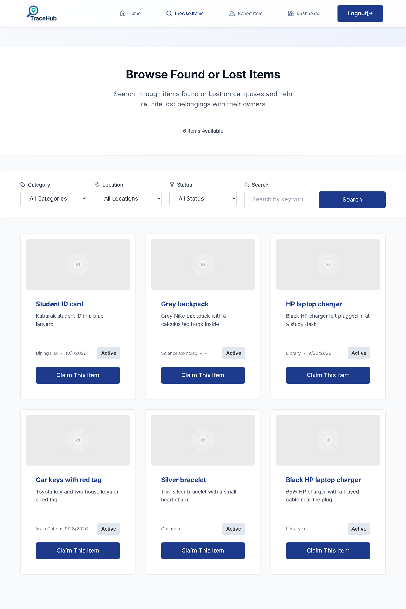
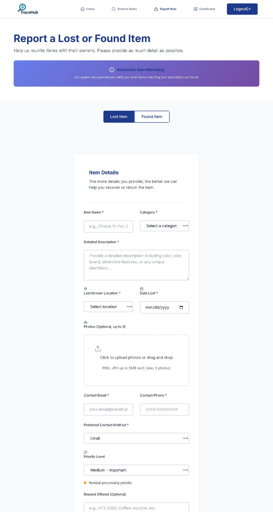
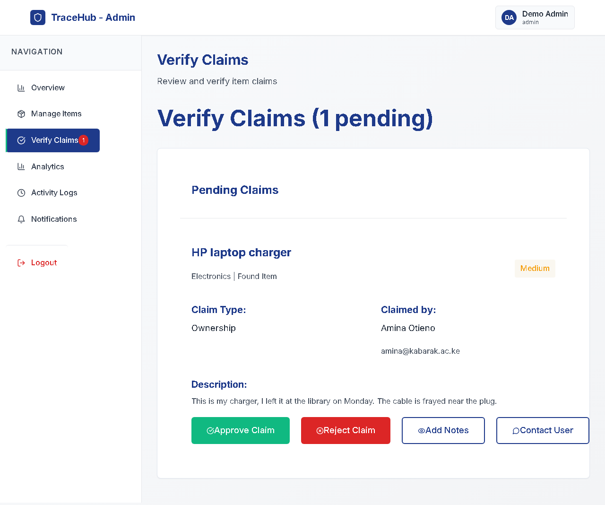

Case study
TraceHub
A lost-and-found web app for reporting and finding lost items across campuses.

Quick facts
How it works
From lost to returned
Browse what's been handed in
Students sign up with their university email and can then browse every open report, filtered by category, building and status or searched by keyword.
Each card shows where and when the item turned up, with a button to claim it.

Report it once, get matched automatically
A report records the item, category, building, date and up to three photos. The app then compares it with open reports of the opposite kind, scoring category, wording, building and date.
Strong matches notify the owner in the app and by email, and the matching runs again every six hours so later reports are caught too.

Claims checked before handover
Someone claiming an item describes it and answers verification questions, with evidence if they have it. An admin approves or rejects the claim, adds notes or contacts the claimant.
Admins sign in on a separate page that also asks for a staff ID, and the handover is recorded against both people.

Try it